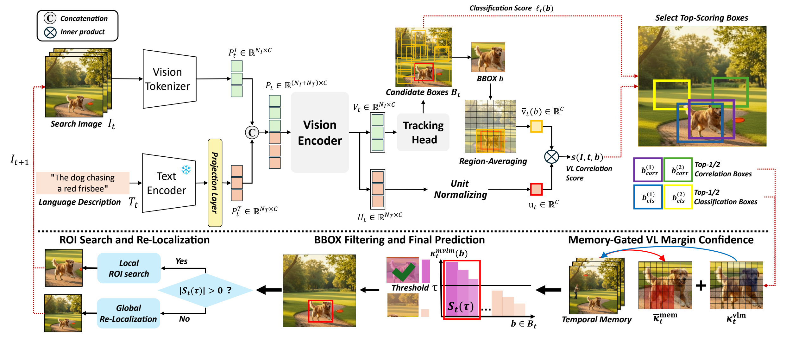
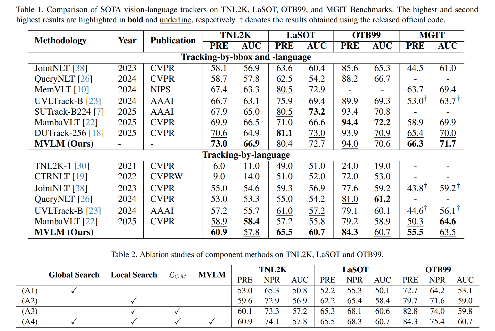
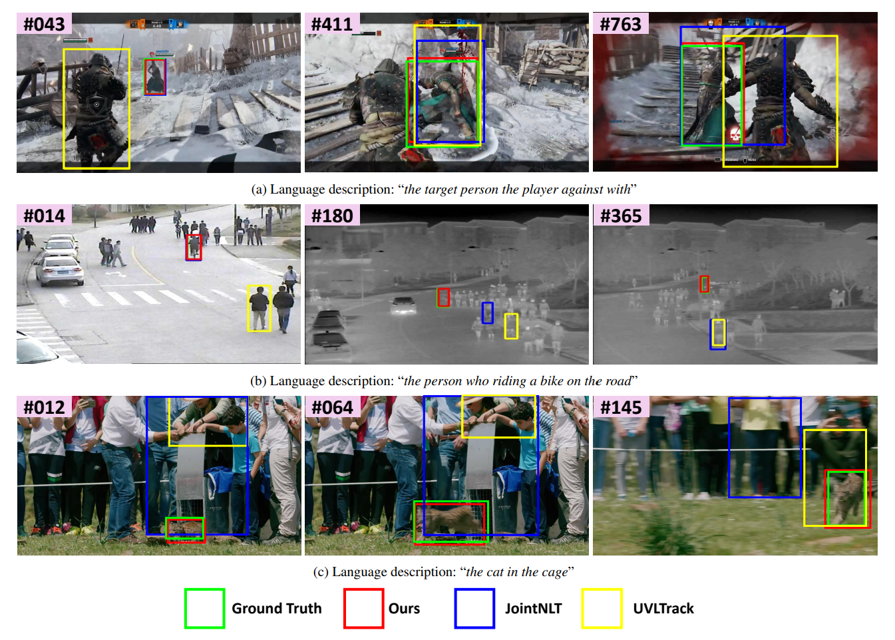

We introduce a new template-free tracking paradigm based solely on natural language, capable of tracking an arbitrary object and seamlessly switching to a new target without box initialization. Our key idea is to localize an object via vision-language (VL) correlation. However, using the correlation alone is brittle under large search regions due to spatial uncertainty and ambiguous VL saliency. To resolve these, we propose MVLM, a memory-based vision-language margin confidence that integrates vision–language correlation, encoder prediction, and temporal memory. MVLM dynamically gates the search region—switching between compact ROI (Region of Interest) search and global re-localization—to reduce spatial uncertainty. Theoretically, we derive bounds that connect the MVLM score to tracking probability, characterizing mis-localization within ROI and ROI-exclusion probabilities. Through extensive evaluation, we validate our theorems and achieve state-of-the-art performance on several benchmarks (TNL2K, LaSOT, OTB99, and MGIT) using only language guidance.

Figure 1. The illustration of our template-free tracking framework.

Table 1–2. Comparison of SOTA vision-language trackers on TNL2K, LaSOT, OTB99, and MGIT benchmarks, and ablation studies of component methods (bottom).

Figure 4. Qualitative comparison on three challenging sequences from TNL2K. MVLM (red) consistently localizes the language-described target, while JointNLT (blue) and UVLTrack (yellow) frequently drift to distractors or lose the target under occlusion. Ground truth shown in green.
In this work, we address template-free tracking where the tracker localizes objects using only natural language, without visual templates or box initialization. We show that VL correlation margin is the fundamental tracking signal for reliable tracking: under a sub-Gaussian noise model, larger margins between the target and distractors exponentially reduce mis-localization probability. However, margins can degrade under challenging scenarios. To address this, we propose MVLM confidence that integrates correlation margins and temporal memory to dynamically gate between local ROI search and global re-localization. Theoretically, we derive bounds decomposing failure into ROI exclusion and within-ROI mis-localization, justifying MVLM as a theoretically grounded gating mechanism. Extensive experiments validate our theoretical predictions and achieve state-of-the-art performance under language-only guidance, demonstrating that margin-based correlation provides a reliable foundation for template-free tracking in challenging scenarios.
@InProceedings{Park_2026_CVPR,
author = {Park, Dae-Hyeon and Baek, Mina and Ha, Jeong-Hun and Park, Chan-Seop and Ganiev, Jamshidjon and Bae, Seung-Hwan},
title = {MVLM: Template-Free Tracking via Vision-Language Margin Confidence and Memory-Gated Tracking},
booktitle = {Proceedings of the IEEE/CVF Conference on Computer Vision and Pattern Recognition (CVPR)},
month = {June},
year = {2026},
pages = {35156-35165}
}